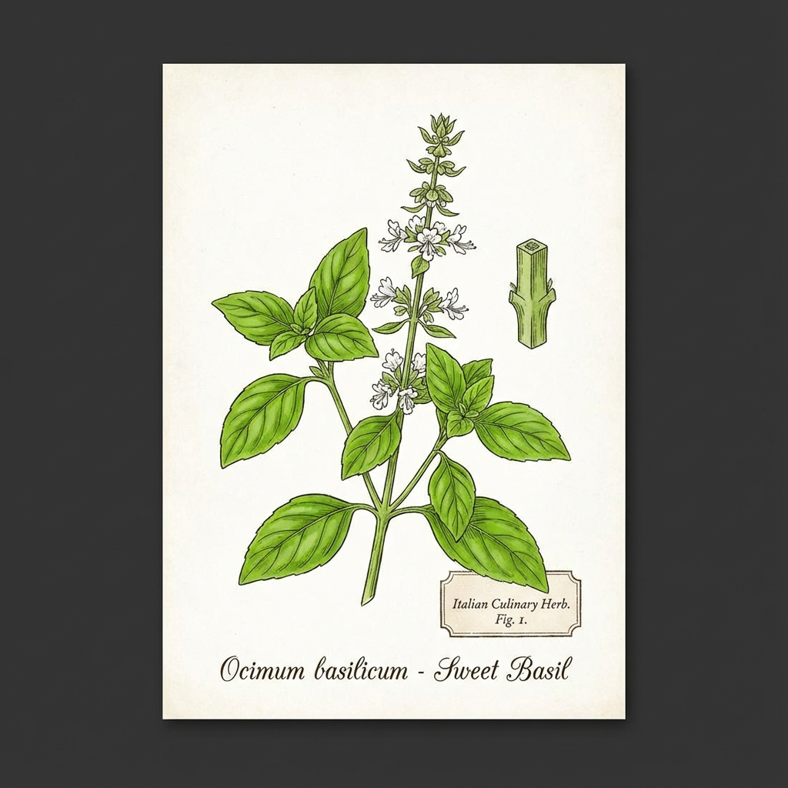

🌿'">
1. Basilikum
Ocimum basilicum
🗣️ Lokale Namen: Basilico, Erba reale, Ocimum
🔍 Erkennung
- Ovale, glänzend grüne Blätter
- Weißliche Lippenblüten
- Intensiver, süßlich-würziger Duft
- 20-50 cm hoch
💊 Heilwirkung
- Verdauungsfördernd - Bei Magenbeschwerden
- Beruhigend - Stresslindernd
- Antibakteriell - Ätherische Öle
- Krampflösend - Bei Koliken
📋 Anwendung
Frische Blätter: Pesto, Caprese - die Seele der italienischen Küche!
Tee: 1-2 TL frische Blätter.